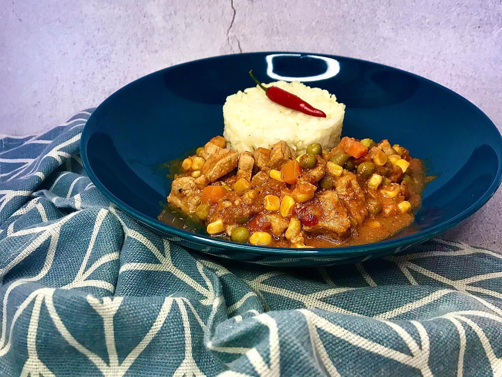

Dusená ryža podľa @cili_papricka_v_kuchyni — Normy Jedál
Dnesny obed sa niesol v nadychu mexika... mexicke sote s dusenou ryzou na cibulke. Pre milovnikov ostrych jedal s chilli naviac... moji chlapci nejedia stiplave. Jeden drobec este nemoze, druhy stiplave nema rad. Ja jedla s chilli milujem 🌶♥️😍 #mexickesote #dusenaryza #chilli #dnesjem #dnesvarim #obed #dnesnyobed